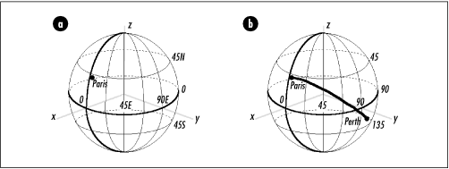

17.10 Arc Length Example:
Approximating Distances on Earth
One application of computing arc lengths on
spherical surfaces is approximating distances between points
on Earth. Sometimes these are called great-circle distances. Of course, the earth is not a perfect
sphere but an ellipsoid slightly squatter from north to south
than east to west. That is, if we were to orbit the earth
along the prime meridian, we would find the distance traveled
to be less than that of orbiting the earth along the equator.
Still, treating the earth as a sphere usually gives reasonable
approximations.
To compute the
distance between two points on Earth, we first need a way to
locate each point. In geography, points are usually located in
terms of latitude and longitude.
Latitudes sweep from at the equator to 90 degrees at either
pole. For points north of the equator, the letter "N" is
appended to the latitude, and for points south, an "S" is
appended. Often, degrees north of the equator are thought of
as positive and degrees south of the equator as negative.
Longitudes sweep from at the prime meridian to 180 degrees in
either direction. For points to the west of the prime
meridian, the letter "W" is appended to the longitude, and for
points to the east, an "E" is appended. Often, degrees west of
the prime meridian are thought of as positive and degrees east
of the prime meridian as negative. For example, Paris is
approximately 49.010 degrees to the north of the equator and
2.548 degrees to the east of the prime meridian. Therefore,
its position is 49.010N, 2.548E, or 49.010, -2.548 (see Figure
17.8a).
To approximate the
distance between two points on Earth given their latitude and
longitude, we first translate each point into spherical
coordinates and convert all angles from degrees to radians.
Then, we simply compute the length of the arc between the
points. Recall that a point in spherical coordinates is given
by the triple (r, , f). In terms of the earth, r is the distance along an imaginary
line from the earth's center to a point on its surface; that
is, r is the earth's radius,
which is 3440.065 nautical miles. The coordinate is the angle the point forms with the
prime meridian. Thus, corresponds to longitude. However,
since positive longitudes are to the west and positive values
of are the opposite direction,
to obtain from degrees
longitude, we reverse the sign of the longitude. The
coordinate f is the angle a point forms with an
imaginary line extending vertically from the center of the
earth to the north pole. Thus, f corresponds to latitude. However,
since latitudes are relative to the equator and not the north
pole, to obtain f from degrees latitude, we reverse
the sign of the latitude and add 90 degrees.
As an example, to compute the distance
between Paris, France (49.010N, 2.548E) and Perth, Australia
(31.940S, 115.967E), we begin by converting their latitudes
and longitudes to spherical equivalents: (3440.065, 2.548,
40.990) for Paris and (3440.065, 115.967, 121.940) for Perth.
Next, we convert the angles in each point to radians. Last, we
compute the length of the arc between the points, which is
7706 nautical miles (see Figure
17.8b).

This example presents a function, geodist (see Examples Example
17.5 and Example
17.6), that approximates the distance between two points
on Earth using the method just described. The function accepts
the latitude and longitude for each point as
lat1 and lon1, and
lat2 and lon2. It returns the
distance between the points in d. After
performing some initial validation of the latitudes and
longitudes, geodist converts
the latitude and longitude representations into spherical
coordinates, stores each representation in p1
and p2 with all angles converted to radians,
and calls arclen to compute the
distance.
The runtime complexity of geodist is O (1) because all of the steps in
computing a great-circle distance run in a constant amount of
time.
Example 17.5.
Header for a Function for Approximating Distances on Earth
/*****************************************************************************
* *
* ------------------------------- geodist.h ------------------------------ *
* *
*****************************************************************************/
#ifndef GEODIST_H
#define GEODIST_H
/*****************************************************************************
* *
* Define the radius of the earth in nautical miles. *
* *
*****************************************************************************/
#define EARTH_RADIUS 3440.065
/*****************************************************************************
* *
* --------------------------- Public Interface --------------------------- *
* *
*****************************************************************************/
int geodist(double lat1, double lon1, double lat2, double lon2, double *d);
#endif
Example 17.6.
Implementation of a Function for Approximating Distances on
Earth /*****************************************************************************
* *
* ------------------------------- geodist.c ------------------------------ *
* *
*****************************************************************************/
#include "geodist.h"
#include "geometry.h"
/*****************************************************************************
* *
* -------------------------------- geodist ------------------------------- *
* *
*****************************************************************************/
int geodist(double lat1, double lon1, double lat2, double lon2, double *d) {
SPoint p1,
p2;
/*****************************************************************************
* *
* Validate the coordinates. *
* *
*****************************************************************************/
if (lat1 < -90.0 || lat1 > 90.0 || lat2 < -90.0 || lat2 > 90.0)
return -1;
if (lon1 < -180.0 || lon1 > 180.0 || lon2 < -180.0 || lon2 > 180.0)
return -1;
/*****************************************************************************
* *
* Convert each latitude and longitude to spherical coordinates in radians *
* using the earth's radius for rho. *
* *
*****************************************************************************/
p1.rho = EARTH_RADIUS;
p1.theta = -1.0 * DEGTORAD(lon1);
p1.phi = (DEGTORAD(-1.0 * lat1)) + DEGTORAD(90.0);
p2.rho = EARTH_RADIUS;
p2.theta = -1.0 * DEGTORAD(lon2);
p2.phi = (DEGTORAD(-1.0 * lat2)) + DEGTORAD(90.0);
/*****************************************************************************
* *
* Compute the distance between the points. *
* *
*****************************************************************************/
arclen(p1, p2, d);
return 0;
} |